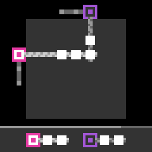

sk48
Stretch and slide ropes so each rope's target blocks match the colour order shown in the diagram.
8 levels · 7 rules · all levels replayed in Lean
Replay
The certified run that cleared every level, one action at a time. Beside each step: the rules of the model that explain it; they are also marked in the rule list below.

Explained by
Press Play or step to load the run. Keys, while the player is on screen: ← → step, Space play / pause. A click is circled; cells that changed are outlined.
How it plays
There are two kinds of player: the horizontal player hangs on the vertical track on the left and extends a horizontal rope to the right; the vertical player hangs on the horizontal track at the top and extends a vertical rope downward. Click a player to select it. Pressing a key along the rope's direction lengthens or shortens the rope by one cell, the coloured target blocks strung on the rope move along, and the run in front of the rope tip is pushed away; pressing a key perpendicular to the rope translates the player together with the whole rope by one cell, and the target blocks the rope sweeps over are carried away. When the colour order of each rope, counted outward from the player, agrees with the corresponding group in the diagram at the bottom of the screen, the level is cleared. Things cannot be pushed when they hit the board edge, a wall, or are pinned by another rope; dead ropes hanging from the top are also named in the diagram.

Model
The final model: 6 object types and 7 rules. Each rule is a Python check against every recorded step; 4 of them are translated into Lean (the paper's per-game table). Code under a rule is the file of the same name in the agent's Lean project.
Object types
- Board
boardFixed per level: grid size, walls, two tracks, the diagram, and dead ropes.Lean · Board.lean
-- World.board : Board structure Board where grid : Grid walls : List Cell hrail : Option Rail vrail : Option Rail goals : List Goal dead : List DeadRope deriving DecidableEq, BEq, Repr - Target blocks
blocksEach coloured block's cell and colour on the board.Lean · Block.lean
-- St.blocks : List Block structure Block where cell : Cell color : Nat deriving DecidableEq, BEq, Repr - Horizontal player
hplayerHangs on the left track with a horizontal rope; records its row and rope length.Lean · HPlayer.lean
namespace Game structure HPlayer where owner : Nat row : Nat rope : Nat deriving DecidableEq, BEq, Repr end Game - Vertical players
vplayersHang on the top track with vertical ropes; record each column and rope length.Lean · VPlayer.lean
namespace Game structure VPlayer where owner : Nat col : Nat rope : Nat deriving DecidableEq, BEq, Repr end Game - Selection
selectedWhich player the direction keys currently act on.Python only - Bottom bar
barThe bottom line of the screen, shortening right to left as direction keys are pressed.Python only
Rules
rope_slideA key along the rope lengthens or shortens it one cell; strung blocks move along.Python
from __future__ import annotations import dataclasses from .._common import kind, move_scope, sans_bar, verdict … def scope_(prev, action, nxt, ctx): from derive.line import key_axis, mover from objects import parse r = move_scope(action, ctx) if r: return r k = kind(action) if k == "click": … m = mover(parse(prev)) if m is None: … ax = key_axis(m, k) if ax is None or ax[0] != "along": … return None def predict(w, a): from derive.line import key_axis, mover, pins from objects import Block, Cell, HPlayer, VPlayer mv = mover(w) _, k = key_axis(mv, a.kind) walls = w.wall_set() m = w.block_map() pin = pins(w, mv) L, n, at = mv.L, mv.n, mv.at if k > 0 and (n >= L or at(n) in walls): return w if k < 0 and n == 0: return w occ = [i for i in range(min(n, L)) if at(i) in m] run = [] if k > 0: i = n while i < L and at(i) in m: run.append(i) i += 1 run_ok = bool(run) and not any(at(i) in pin for i in run) and \ run[-1] + 1 < L and at(run[-1] + 1) not in pin and at(run[-1] + 1) not in walls moving_run = run if run_ok else [] moving: list[int] = [] for i in (reversed(occ) if k > 0 else occ): t = i + k if at(i) in pin or not (0 <= t < L) or at(t) in pin: continue if at(t) in m and t not in moving and t not in moving_run: continue moving.append(i) go = set(moving_run) | set(moving) nm = {} for (r, c), col in m.items(): i = c if mv.orient == "h" else r on_line = (r if mv.orient == "h" else c) == mv.pos nm[at(i + k) if (on_line and i in go) else (r, c)] = col blocks = frozenset(Block(Cell(r, c), col) for (r, c), col in nm.items()) if mv.orient == "h": return dataclasses.replace(w, blocks=blocks, hplayer=HPlayer(mv.owner, mv.pos, n + k)) vs = tuple(VPlayer(v.owner, v.col, n + k) if v.owner == mv.owner else v for v in w.vplayers) return dataclasses.replace(w, blocks=blocks, vplayers=vs) def assert_(prev, action, nxt, ctx): from objects import parse, parse_action w, nw = parse(prev), parse(nxt) return verdict(sans_bar(predict(w, parse_action(action, prev))) == sans_bar(nw))Lean · RopeSlide.lean
import Obj.Derive.Line namespace Game def runFrom (s : St) (ln : Line) : Nat → Nat → List Nat | _, 0 => [] | i, fuel + 1 => if i < ln.len && s.has (ln.cellAt i) then i :: runFrom s ln (i + 1) fuel else [] def blocked (s : St) (ln : Line) (pins : List Cell) (acc run : List Nat) (t : Nat) : Bool := !(t < ln.len) || pins.contains (ln.cellAt t) || (s.has (ln.cellAt t) && !(acc.contains t) && !(run.contains t)) def ropeCore (walls pins : List Cell) (s : St) (ln : Line) (n : Nat) (ext : Bool) : Option (List Block) := if ext && (decide (ln.len ≤ n) || walls.contains (ln.cellAt n)) then none else if !ext && n == 0 then none else let occ := (List.range (min n ln.len)).filter (fun i => s.has (ln.cellAt i)) let run := if ext then runFrom s ln n ln.len else [] let runOk : Bool := match run.getLast? with | none => false | some last => !(run.any (fun i => pins.contains (ln.cellAt i))) && last + 1 < ln.len && !(pins.contains (ln.cellAt (last + 1))) && !(walls.contains (ln.cellAt (last + 1))) let movingRun := if runOk then run else [] let order := if ext then occ.reverse else occ let moving := order.foldl (fun acc i => if pins.contains (ln.cellAt i) then acc else if ext then (if blocked s ln pins acc movingRun (i + 1) then acc else acc ++ [i]) else if i == 0 then acc else if blocked s ln pins acc movingRun (i - 1) then acc else acc ++ [i]) [] let go := movingRun ++ moving some (s.blocks.map (fun bl => match go.find? (fun i => ln.cellAt i == bl.cell) with | some i => { bl with cell := ln.cellAt (if ext then i + 1 else i - 1) } | none => bl)) def stepLen (ext : Bool) (n : Nat) : Nat := if ext then n + 1 else n - 1 def ropeSlideV (b : Board) (s : St) (ext : Bool) : St := match s.vSel with | some v => match ropeCore b.walls (pinsOf b s v.owner) s ⟨fun i => ⟨i, v.col⟩, b.grid.rows⟩ v.rope ext with | some bl => { s with blocks := bl, vs := s.vs.map (fun x => if x.owner == v.owner then { x with rope := stepLen ext x.rope } else x) } | none => s | none => s def ropeSlide (b : Board) (s : St) (ext : Bool) : St := match s.h with | some h => if h.owner == s.sel then match ropeCore b.walls (pinsOf b s h.owner) s ⟨fun i => ⟨h.row, i⟩, b.grid.cols⟩ h.rope ext with | some bl => { s with blocks := bl, h := some { h with rope := stepLen ext h.rope } } | none => s else ropeSlideV b s ext | none => ropeSlideV b s ext end Gamepole_sweepA key across the rope moves the player and rope one cell, carrying swept blocks.Python
from __future__ import annotations import dataclasses from .._common import kind, move_scope, sans_bar, verdict … def scope_(prev, action, nxt, ctx): from derive.line import key_axis, mover from objects import parse r = move_scope(action, ctx) if r: return r k = kind(action) if k == "click": … m = mover(parse(prev)) if m is None: … ax = key_axis(m, k) if ax is None or ax[0] != "across": … return None def predict(w, a): from derive.line import key_axis, mover from objects import Block, Cell, HPlayer, VPlayer mv = mover(w) _, d = key_axis(mv, a.kind) walls = w.wall_set() m = w.block_map() t = mv.pos + d if not (0 <= t < mv.W) or not (mv.rail_lo <= t <= mv.rail_hi): return w pole = range(min(mv.n, mv.L)) if any(mv.at(i, t) in walls for i in pole): return w def shift(cell): r, c = cell return (r + d, c) if mv.orient == "h" else (r, c + d) cells: list[tuple[int, int]] = [] for i in pole: here, there = mv.at(i), mv.at(i, t) s = here if here in m else (there if there in m else None) while s is not None and s in m: cells.append(s) s = shift(s) g = w.board.grid if any(not g.inside(*shift(x)) for x in cells): return w go = set(cells) blocks = frozenset(Block(Cell(*(shift(x) if x in go else x)), col) for x, col in m.items()) if mv.orient == "h": return dataclasses.replace(w, blocks=blocks, hplayer=HPlayer(mv.owner, t, mv.n)) vs = tuple(sorted((VPlayer(v.owner, t, v.rope) if v.owner == mv.owner else v for v in w.vplayers), key=lambda v: v.col)) return dataclasses.replace(w, blocks=blocks, vplayers=vs) def assert_(prev, action, nxt, ctx): from objects import parse, parse_action w, nw = parse(prev), parse(nxt) return verdict(sans_bar(predict(w, parse_action(action, prev))) == sans_bar(nw))Lean · PoleSweep.lean
import Obj.Derive.Line namespace Game def chainFrom (s : St) (dest : Cell → Option Cell) : Cell → Nat → List Cell | _, 0 => [] | x, fuel + 1 => if s.has x then x :: (match dest x with | some y => chainFrom s dest y fuel | none => []) else [] def sweepCore (b : Board) (s : St) (pole : List Cell) (dest : Cell → Option Cell) : Option (List Block) := let fuel := b.grid.rows + b.grid.cols let cells := pole.flatMap (fun p => if s.has p then chainFrom s dest p fuel else match dest p with | some q => if s.has q then chainFrom s dest q fuel else [] | none => []) if cells.any (fun x => (dest x).isNone) then none else some (s.blocks.map (fun bl => if cells.contains bl.cell then match dest bl.cell with | some y => { bl with cell := y } | none => bl else bl)) def downOrUp (rows : Nat) (fwd : Bool) (c : Cell) : Option Cell := if fwd then (if c.row + 1 < rows then some ⟨c.row + 1, c.col⟩ else none) else (if c.row == 0 then none else some ⟨c.row - 1, c.col⟩) def rightOrLeft (cols : Nat) (fwd : Bool) (c : Cell) : Option Cell := if fwd then (if c.col + 1 < cols then some ⟨c.row, c.col + 1⟩ else none) else (if c.col == 0 then none else some ⟨c.row, c.col - 1⟩) def railOk (r : Option Rail) (k : Nat) : Bool := match r with | some r => r.covers k | none => false def poleSweepV (b : Board) (s : St) (fwd : Bool) : St := match s.vSel with | some v => match rightOrLeft b.grid.cols fwd ⟨0, v.col⟩ with | none => s | some t0 => if !(railOk b.vrail t0.col) || (vCells v.col v.rope b.grid.rows).any (fun c => b.isWall ⟨c.row, t0.col⟩) then s else match sweepCore b s (vCells v.col v.rope b.grid.rows) (rightOrLeft b.grid.cols fwd) with | some bl => { s with blocks := bl, vs := s.vs.map (fun x => if x.owner == v.owner then { x with col := t0.col } else x) } | none => s | none => s def poleSweep (b : Board) (s : St) (fwd : Bool) : St := match s.h with | some h => if h.owner == s.sel then match downOrUp b.grid.rows fwd ⟨h.row, 0⟩ with | none => s | some t0 => if !(railOk b.hrail t0.row) || (hCells h.row h.rope b.grid.cols).any (fun c => b.isWall ⟨t0.row, c.col⟩) then s else match sweepCore b s (hCells h.row h.rope b.grid.cols) (downOrUp b.grid.rows fwd) with | some bl => { s with blocks := bl, h := some { h with row := t0.row } } | none => s else poleSweepV b s fwd | none => poleSweepV b s fwd end Gameclick_selectClicking another player selects it; any other click changes nothing.Python
from __future__ import annotations import dataclasses from .._common import kind, move_scope, sans_bar, verdict … def scope_(prev, action, nxt, ctx): r = move_scope(action, ctx) if r: return r if kind(action) != "click": … return None def predict(w, a): movers = ({w.hplayer.owner} if w.hplayer else set()) | {v.owner for v in w.vplayers} if a.target is not None and a.target in movers: return dataclasses.replace(w, selected=a.target) return w def assert_(prev, action, nxt, ctx): from objects import parse, parse_action w, nw = parse(prev), parse(nxt) return verdict(sans_bar(predict(w, parse_action(action, prev))) == sans_bar(nw))Lean · ClickSelect.lean
import Obj.World namespace Game def isMover (s : St) (o : Nat) : Bool := (match s.h with | some h => h.owner == o | none => false) || s.vs.any (fun v => v.owner == o) def clickSelect (s : St) (t : Option Nat) : St := match t with | some o => if isMover s o then { s with sel := o } else s | none => s end Gamewin_iff_threadedThe level clears exactly when each rope's colours, counted outward, match its diagram group.Python
from __future__ import annotations from .._common import kind, levelup, verdict … … def scope_(prev, action, nxt, ctx): if kind(action) == "reset": return "RESET → reset_restart" if levelup(ctx) and kind(action) == "a7": … return None def _predict(w, a): from derive.line import key_axis, mover … if a.kind == "click": return click_select.predict(w, a) m = mover(w) ax = None if m is None else key_axis(m, a.kind) if ax is None: return None return (rope_slide if ax[0] == "along" else pole_sweep).predict(w, a) def assert_(prev, action, nxt, ctx): from derive.beads import won from objects import parse, parse_action if levelup(ctx): p = _predict(parse(prev), parse_action(action, prev)) return "NA" if p is None else verdict(won(p)) return verdict(not won(parse(nxt)))Lean · WinIffThreaded.lean
import Obj.Derive.Beads namespace Game def isGoal (b : Board) (s : St) : Bool := won b s end Gamea7_one_stepACTION7 changes either the horizontal player's row or rope length by exactly one cell.Python onlyPython
from __future__ import annotations from .._common import kind, levelup, verdict … … … … def scope_(prev, action, nxt, ctx): from objects import parse if kind(action) != "a7": … if levelup(ctx): … w = parse(prev) if w.hplayer is None or w.hplayer.owner != w.selected: … return None def assert_(prev, action, nxt, ctx): from objects import parse w, nw = parse(prev), parse(nxt) a, b = w.hplayer, nw.hplayer if b is None or b.owner != a.owner: return "FALSE" dr, dn = abs(b.row - a.row), abs(b.rope - a.rope) one = (dr, dn) in ((1, 0), (0, 1)) rest = nw.vplayers == w.vplayers and nw.selected == w.selected and nw.board == w.board return verdict(one and rest)bar_clockThe bar shrinks at most one cell per direction key; restart or clearing resets it.Python onlyPython
from __future__ import annotations from .._common import kind, levelup, verdict … … … … def scope_(prev, action, nxt, ctx): return None def assert_(prev, action, nxt, ctx): from objects import parse k = kind(action) nw = parse(nxt) if k == "reset" or levelup(ctx): return verdict(nw.bar == 0) w = parse(prev) d = nw.bar - w.bar if k in ("click", "a7"): return verdict(d == 0) return verdict(d in (0, 1))reset_restartRestart clears the bar and reselects the horizontal player; same level keeps the board.Python onlyPython
from __future__ import annotations from .._common import kind, levelup, verdict … … … … … def scope_(prev, action, nxt, ctx): if kind(action) != "reset": … return None def assert_(prev, action, nxt, ctx): from objects import parse nw = parse(nxt) ok = nw.bar == 0 and (nw.hplayer is None or nw.selected == nw.hplayer.owner) if not levelup(ctx): ok = ok and parse(prev).board == nw.board return verdict(ok)
Code is shown with comments and the agent's notes removed; the files as written are in the archive under Check it yourself.
Proof
For every level, Lean starts from the level's first screen, applies the model's rules to the certified actions, and checks that every computed state agrees with the recorded frame on the components the model represents, and that the last one wins. Each theorem is closed by the Lean kernel and is a statement about the learned model.
Every level can be won
theorem L0_winnable : Winnable L0_board L0_start := …theorem L1_winnable : Winnable L1_board L1_start := …theorem L2_winnable : Winnable L2_board L2_start := …theorem L3_winnable : Winnable L3_board L3_start := …theorem L4_winnable : Winnable L4_board L4_start := …theorem L5_winnable : Winnable L5_board L5_start := …theorem L6_winnable : Winnable L6_board L6_start := …theorem L7_winnable : Winnable L7_board L7_start := …Statements only; the proofs and the full Lean project are in the archive, with the steps to re-run them, under Check it yourself.
Check it yourself
Everything on this page comes from files you can download and check. The archive holds the agent's files: the recorded run, the concept book, the concept sources, the Lean project and the sealed model file, plus the record of our kernel check.
Download sk48.zip 0.8 MB · 75 files
Re-run the proof
Before you start: our run of this check took 72 s and 3.6 GB of memory at its peak (2026-10-24).
- Download sk48.zip and unpack it. The model and its theorems are in
archive/sk48-20260920/formal/Game.lean. Before changing it, check that its SHA-256 is54a19b11042fe8c83267871ed9eb27f1a5218cee6d96475e973fd1c0f047880d - Install Lean with elan, then the version named in the archive's
lean-toolchain:elan toolchain install leanprover/lean4:v4.34.0 - Copy the model file to
Check.leanand append these two lines to the copy:#print axioms consistent #print axioms faithful - In the folder that holds
Check.lean, run:lean +leanprover/lean4:v4.34.0 -M60000 Check.lean - Lean should finish without errors and print:
The first line is printed by the file itself: for each rule, how many recorded transitions meet its condition.GUARD_HITS a1_up=209,a2_down=188,a3_retract=194,a4_extend=256,a6_select=59,a7_bounce=1,a7_drag=4,a7_fallthrough=4,a7_shuttle=31,bar_clock=1007,bar_monotone=1013,board_static=1013,frame_not_state=1007,hmove_blocks=452,hud_checklist=1013,levelup_threaded=975,move_block=245,rail_band=402,retract_floor=196,rope_ceiling=12,rope_limit=1013,v_capture=17,v_carry=12,v_drag=63,v_extend=89,v_push=49,v_retract=63,v_slide=55,vmove_blocks=245,vrope_static=138,vslide_blocks=55 'consistent' depends on axioms: [propext] 'faithful' depends on axioms: [propext]
What a pass establishes
consistent: for every recorded transition, as read by the agent's parser and with duplicates removed, every rule whose condition holds also has its effect hold. faithful: the certified run, recomputed step by step from the first screen of each level, matches the record and ends in a win. Axioms used: propext, all among Lean's standard ones.
What it does not establish: that the parser reads the screens correctly (that step runs in Python, outside Lean), or that a rule whose condition never occurs in the record is right. The Python file that produced the readings inside the model file is in the archive at meta/repair-20260928/lib/sk48-20260920/_lib.py.